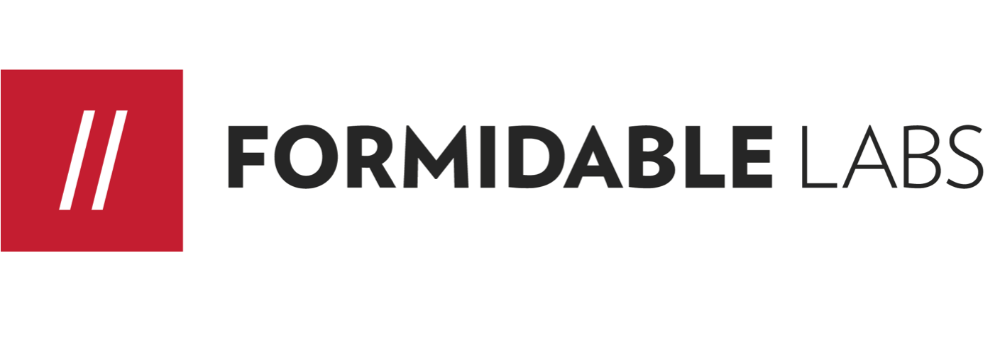
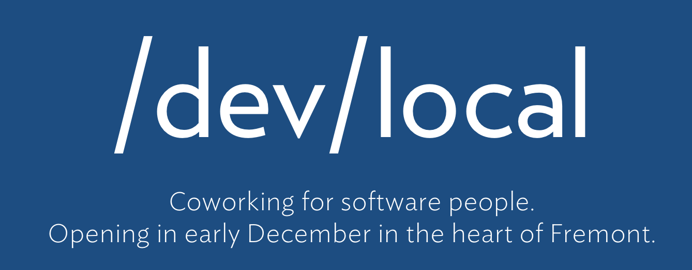
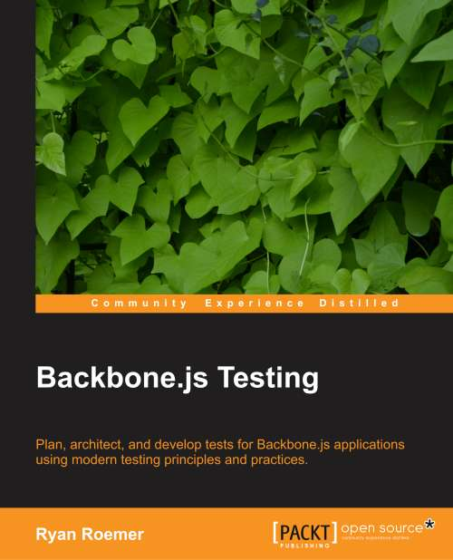

<!DOCTYPE html>
<html lang="en"></html>
<head>
  <meta charset="utf-8">
  <title>Code Fellows - Learn Frontend Testing</title>
  <meta name="description" content="Learn how to test frontend JavaScript code in your web applications.">
  <meta name="author" content="Ryan Roemer">
  <meta name="apple-mobile-web-app-capable" content="yes">
  <meta name="apple-mobile-web-app-status-bar-style" content="black-translucent">
  <meta name="viewport" content="width=device-width, initial-scale=1.0, maximum-scale=1.0, user-scalable=no">
  <link rel="stylesheet" href="css/reveal.min.css">
  <link id="theme" rel="stylesheet" href="css/theme/formidable.css">
  <link rel="stylesheet" href="lib/css/zenburn.css">
  <link rel="stylesheet" href="css/site.css">
  <script>document.write( '<link rel="stylesheet" href="css/print/' + ( window.location.search.match( /print-pdf/gi ) ? 'pdf' : 'paper' ) + '.css" type="text/css" media="print">' );</script><!--[if lt IE 9]>
  <script src="lib/js/html5shiv.js"></script><![endif]-->
</head>
<body>
  <div class="reveal">
    <div class="slides">
      <section id="title" class="title">
        <h1>Learn Frontend Testing</h1>
        <h3><a href="https://www.codefellows.org/">Code Fellows</a> - Dec. 17th, 2013</h3>
        <p><a href="http://loose-bits.com">Ryan Roemer</a> |&nbsp;<a href="http://twitter.com/ryan_roemer">@ryan_roemer</a></p>
        <p><a href="http://twitter.com/FormidableLabs">@FormidableLabs</a></p>
      </section>
      <section>
        <section>
          <h2>Sponsors</h2>
        </section>
        <section>
          <div><a href="http://formidablelabs.com" class="image"></a></div>
        </section>
        <section>
          <div><a href="http://devlocal.io" class="image"></a></div>
        </section>
      </section>
      <section>
        <section><h2>Motivation</h2>

<p>Web applications are increasingly becoming <strong>frontend heavy</strong>.</p>

<p>We need to <strong>verify</strong> app logic and behavior, and that
means braving the browser.</p>
        </section>
        <section><h2>So let&#39;s test</h2>

<p><strong>Backend</strong> is straightforward and easy</p>

<p>... but what about the frontend?</p>
        </section>
        <section><h2>Frontend testing</h2>

<p><strong>Frontend</strong> testing is difficult and error-prone.</p>

<ul><li>Asynchronous events, timing</li><li>Browser idiosyncracies</li><li>State of testing technologies</li></ul>
        </section>
        <section>
          <h2>But getting better</h2>
          <div><a href="http://backbone-testing.com" class="image"></a></div>
        </section>
        <section>
          <p>... so let's get started with a modern frontend test stack.</p>
        </section>
        <section>
          <h2>Get the code</h2><a href="https://github.com/FormidableLabs/codefellows-frontend-testing">github.com/FormidableLabs/codefellows-frontend-testing</a>
          <pre><code class="text no-highlight">
              $ git clone https://github.com/FormidableLabs/
                          codefellows-frontend-testing.git
                          </code></pre>
        </section>
      </section>
      <section>
        <section><h2>Overview</h2>

<ul><li>Installation and test page</li><li>Suites</li><li>Assertions</li><li>Fakes</li><li>Automation</li></ul>
        </section>
        <section><h2>We will learn how to</h2>

<ul><li>Hook frontend JS to tests</li><li>Write assertions against behavior</li><li>Fake application behavior</li><li>Run and verify the tests</li></ul>
        </section>
        <section><h2>Things we&#39;re <strong>not</strong> going to cover</h2>

<ul><li>TDD / BDD</li><li>Application development</li><li>Functional testing</li><li>Performance testing</li></ul>
        </section>
      </section>
      <section>
        <section>
          <h2>Coding time</h2>
          <p>We're going to say hello:</p>
          <p>"<strong>Code Fellows</strong>" &#10142; "<strong>Hello Code Fellows!</strong>"</p>
          <hr width="50%">
          <p>And <a href="http://en.wikipedia.org/wiki/CamelCase">camel case</a> strings:</p>
          <p>"<strong>fun-test-time</strong>" &#10142; "<strong>funTestTime</strong>"</p>
        </section>
        <section><h2>Set up your project</h2>
          <pre><code class="text no-highlight">
              # Copy the skeleton application.
              $ cp -r skeleton MY_APP_NAME</code></pre>
        </section>
        <section><h2>Project Structure</h2>

<p>Using with the &quot;skeleton&quot; application.</p>
          <pre><code class="text no-highlight">
              MY_APP_NAME/
                js/
                  app/
                    hello.js
                    camel.js
                  lib/
                    chai.js
                    mocha.js
                    mocha.css
                    sinon.js
                index.html</code></pre>
        </section>
        <section>
          <h2>Hello!</h2><a href="skeleton/js/app/hello.js">skeleton/js/app/hello.js</a>
          <pre><code class="javascript">// Hello [VALUE]!
var hello = function (val) {
  return "Hello " + val + "!";
};
</code></pre>
        </section>
        <section>
          <h2>Camel Case</h2><a href="skeleton/js/app/camel.js">skeleton/js/app/camel.js</a>
          <pre><code class="javascript">// Camel case a string.
var camel = function (val) {
  // Uppercase the first character after a dash.
  return val.replace(/-(.)/g, function (m, first) {
    return first.toUpperCase();
  });
};
</code></pre>
        </section>
        <section>
          <h2>Demo</h2><a href="skeleton/index.html">skeleton/index.html</a>
        </section>
      </section>
      <section>
        <section>
          <h2>Test harness</h2>
        </section>
        <section><h2>Test Libraries</h2>

<ul><li><strong><a href="http://visionmedia.github.com/mocha/">Mocha</a></strong> (<code>v1.13.0</code>): Framework</li><li><strong><a href="http://chaijs.com/">Chai</a></strong> (<code>v1.7.3</code>): Assertions</li><li><strong><a href="http://sinonjs.org/">Sinon.JS</a></strong> (<code>v1.8.1</code>): Fakes - spies and stubs</li></ul>
        </section>
        <section><h2>Directory layout</h2>

<p>A combined structure.</p>
          <pre><code class="text no-highlight">
              MY_APP_NAME/
                js/
                  app/
                  lib/
                  spec/
                    hello.spec.js
                    *.spec.js
                test.html
                index.html</code></pre>
        </section>
        <section><h2>The test page</h2>

<p>Create a test &quot;driver&quot; web page.</p>

<p><a href="example/test.html">example/test.html</a></p>
          <pre><code class="text no-highlight">$ touch MY_APP_NAME/test.html</code></pre>
        </section>
        <section><h2>test.html</h2>
          <pre class="html">&lt;html&gt;
  &lt;head&gt;
    &lt;title&gt;Frontend Testing&lt;/title&gt;
    &lt;!-- Application libraries. --&gt;
    &lt;script src=&quot;js/app/hello.js&quot;&gt;&lt;/script&gt;
    &lt;script src=&quot;js/app/camel.js&quot;&gt;&lt;/script&gt;
    &lt;!-- Test styles and libraries. --&gt;
    &lt;link rel=&quot;stylesheet&quot;
          href=&quot;js/lib/mocha.css&quot; /&gt;
    &lt;script src=&quot;js/lib/mocha.js&quot;&gt;&lt;/script&gt;
    &lt;script src=&quot;js/lib/chai.js&quot;&gt;&lt;/script&gt;
    &lt;script src=&quot;js/lib/sinon.js&quot;&gt;&lt;/script&gt;</pre>
        </section>
        <section><h2>test.html</h2>
          <pre class="html no-indent">&nbsp;   &lt;!-- Test Setup --&gt;
    &lt;script&gt;
      // Set up Chai and Mocha.
      window.expect = chai.expect;
      mocha.setup(&quot;bdd&quot;);
      
      // Run tests on window load.
      window.onload = function () {
        mocha.run();
      };
    &lt;/script&gt;</pre>
        </section>
        <section><h2>test.html</h2>
          <pre class="html no-indent">&nbsp;   &lt;!-- Tests. --&gt;
    &lt;!-- ... spec script includes go here ... --&gt;
&nbsp; &lt;/head&gt;
  &lt;body&gt;
    &lt;div id=&quot;mocha&quot;&gt;&lt;/div&gt;
  &lt;/body&gt;
&lt;/html&gt;</pre><p><a href="example/test-empty.html">example/test-empty.html</a></p>
        </section>
      </section>
      <section>
        <section><h2>Mocha Suites, Specs</h2>

<ul><li><strong>Spec</strong>: A <strong>test</strong>.</li><li><strong>Suite</strong>: A collection of <strong>specs</strong> or <strong>suites</strong>.</li></ul>
        </section>
        <section><h2>Suites, Specs</h2>

<p><a href="example/test-mocha.html">test-mocha.html</a> |
<a href="example/js/spec/mocha-suite.spec.js">mocha-suite.spec.js</a></p>
          <pre><code class="javascript">describe("single level", function () {
  it("should test something");
});

describe("top-level", function () {
  describe("nested", function () {
    it("is slow and async", function (done) {
      setTimeout(function () { done(); }, 300);
    });
  });
});</code></pre>
        </section>
        <section><h2>Setup, Teardown</h2>

<p><a href="example/test-mocha.html">test-mocha.html</a> |
<a href="example/js/spec/mocha-setup.spec.js">mocha-setup.spec.js</a></p>
          <pre><code class="javascript">describe("setup/teardown", function () {
  before(function (done) { done(); });
  beforeEach(function () {});

  after(function (done) { done(); });
  afterEach(function () {});

  it("should test something");
});
</code></pre>
        </section>
      </section>
      <section>
        <section><h2>Chai Assertions</h2>

<ul><li>Natural language syntax.</li><li>Chained assertions.</li></ul>
        </section>
        <section><h2>Chai API</h2>

<p>The <a href="http://chaijs.com/api/bdd/">&quot;bdd&quot; API</a>:</p>

<ul><li><strong>Chains</strong>: <code>to</code>, <code>be</code>, <code>been</code>, <code>have</code></li><li><strong>Groups</strong>: <code>and</code></li><li><strong>Basics</strong>: <code>a</code>, <code>equal</code>, <code>length</code>, <code>match</code></li></ul>
        </section>
        <section><h2>Hello!</h2>

<p><a href="example/test-hello.html">test-hello.html</a> |
<a href="example/js/spec/hello.spec.js">hello.spec.js</a></p>
          <pre><code class="javascript">describe("hello", function () {
  it("should say hello", function () {
    expect(hello("World"))
      .to.be.a("string").and
      .to.equal("Hello World!").and
      .to.have.length(12).and
      .to.match(/He[l]{2}/);
  });
});
</code></pre>
        </section>
        <section><h2>Camel Case</h2>

<p><a href="example/test-camel.html">test-camel.html</a> |
<a href="example/js/spec/camel.spec.js">camel.spec.js</a></p>
          <pre><code class="javascript">describe("camel", function () {
  it("handles base cases", function () {
    expect(camel("")).to.equal("");
    expect(camel("single")).to.equal("single");
  });
  it("handles dashed cases", function () {
    expect(camel("a-b-c")).to.equal("aBC");
    expect(camel("one-two")).to.equal("oneTwo");
  });
});
</code></pre>
        </section>
        <section><h2>More Chai</h2>

<p><a href="example/test-chai.html">test-chai.html</a> |
<a href="example/js/spec/chai.spec.js">chai.spec.js</a> |
<a href="example/js/spec/chai-fail.spec.js">chai-fail.spec.js</a></p>
          <pre><code class="javascript">describe("chai", function () {
  it("asserts", function () {
    expect(["one", "two"]).to.contain("two");
    expect({foo: {bar: 12}})
      .to.have.deep.property("foo.bar", 12);
  });
});
describe("chai", function () {
  it("fails", function () {
    expect("one").to.equal("two");
  });
});
</code></pre>
        </section>
      </section>
      <section>
        <section><h2>Sinon.JS Fakes</h2>

<p>Dependencies, complexities? Fake it!</p>

<ul><li><a href="http://sinonjs.org/docs/#spies"><strong>Spies</strong></a>: <em>Observe</em> function behavior.</li><li><a href="http://sinonjs.org/docs/#stubs"><strong>Stubs</strong></a>: <em>Spies</em> that <em>replace</em> behavior.</li><li><a href="http://sinonjs.org/docs/#server"><strong>Fake Server</strong></a>: Override <code>$.ajax</code>, etc.</li></ul>
        </section>
        <section><h2>Sinon.JS <a href="http://sinonjs.org/docs/#spies">Spy</a></h2>

<p><a href="example/test-sinon.html">test-sinon.html</a> |
<a href="example/js/spec/camel-spy.spec.js">camel-spy.spec.js</a> |
<a href="example/js/app/camel.js">camel.js</a></p>
          <pre><code class="javascript">describe("camel", function () {
  it("spies upper case", function () {
    var spy = sinon.spy(String.prototype, "toUpperCase");

    expect(spy.callCount).to.equal(0);
    expect(camel("a-b")).to.equal("aB");
    expect(spy.callCount).to.equal(1);
    expect(spy.firstCall.returnValue).to.equal("B");

    spy.restore();
  });
});
</code></pre>
        </section>
        <section><h2>Sinon.JS <a href="http://sinonjs.org/docs/#stubs">Stub</a></h2>

<p><a href="example/test-sinon.html">test-sinon.html</a> |
<a href="example/js/spec/camel-stub.spec.js">camel-stub.spec.js</a> |
<a href="example/js/app/camel.js">camel.js</a></p>
          <pre><code class="javascript">describe("camel", function () {
  it("stubs upper case", function () {
    var stub = sinon.stub(String.prototype, "toUpperCase",
      function () { return "FOO"; });

    expect(camel("a-b")).to.equal("aFOO");
    expect(stub.callCount).to.equal(1);

    stub.restore();
  });
});
</code></pre>
        </section>
      </section>
      <section>
        <section><h2>Automation</h2>

<p>Drive our frontend tests with
<a href="http://phantomjs.org/"><strong>PhantomJS</strong></a> using
<a href="https://github.com/metaskills/mocha-phantomjs"><strong>Mocha-PhantomJS</strong></a></p>
        </section>
        <section><h2>Prep test.html</h2>

<p>Update the <a href="example/test.html">test.html</a> file:</p>
          <pre><code class="javascript">
              window.onload = function () {
                (window.mochaPhantomJS || mocha).run();
              };</code></pre>
        </section>
        <section><h2>Headless!</h2>

<p>Install and drive <a href="example/test.html">tests</a> from the command line:</p>
          <pre><code class="text no-highlight">
              $ npm install mocha-phantomjs
              $ node_modules/.bin/mocha-phantomjs \
                MY_APP_NAME/test.html</code></pre>
        </section>
        <section><p>... and that&#39;s all for now!</p>
        </section>
      </section>
      <section>
        <section><h2>What we&#39;ve covered</h2>

<ul><li>Test harness</li><li>Suites, specs</li><li>Assertions</li><li>Fakes</li><li>Automation</li></ul>
        </section>
        <section><h2>Additional Topics</h2>

<ul><li>Advanced testing: DOM, fixtures</li><li>TDD / BDD</li><li>Functional testing</li><li>Performance testing</li><li>Continuous Integration:
(<a href="https://travis-ci.org/FormidableLabs/codefellows-frontend-testing">Travis CI</a>)</li></ul>
        </section>
      </section>
      <section id="thanks">
        <h1>Thanks!</h1>
        <p class="last"><a href="http://loose-bits.com">Ryan Roemer</a> |&nbsp;<a href="http://twitter.com/ryan_roemer">@ryan_roemer</a></p>
        <div class="last-links">
          <div class="next"><a href="http://formidablelabs.github.com/codefellows-frontend-testing">bit.ly/cf-testing-slides</a></div>
          <div class="next"><a href="https://github.com/FormidableLabs/codefellows-frontend-testing">bit.ly/cf-testing-source</a></div>
          <div><a href="http://backbone-testing.com">backbone-testing.com</a></div>
        </div>
      </section>
    </div>
  </div>
  <script src="lib/js/head.min.js"></script>
  <script src="js/reveal.min.js"></script>
  <script>
    (function (root) {
      var _toArray = function (obj) {
        return Array.prototype.slice.call(obj);
      };
      
      // Escape HTML code.
      var _escapeHtml = function () {
        _toArray(document.querySelectorAll("pre.html"))
          .forEach(function (code) {
            code.innerHTML = "<code class='html'>" + code.innerHTML + "</code>";
          });
      };
      
      _escapeHtml();
      
      // Highlight source code.
      //
      // Extended wrapper for bringing in markdown.
      var _highlight = function () {
        // Iterate codes and mutate for highlighting.
        var codes = document.querySelectorAll("code");
        
        _toArray(codes).forEach(function (code) {
          var parent = code.parentNode,
            grand = parent.parentNode,
            match;
            
          // Strip initial empty line.
          code.innerHTML = code.innerHTML.replace(/^\s*\n/, "");
          
          // Find indent, if any.
          match = /^(\s+)/.exec(code.innerHTML);
          if (match) {
            // Strip forward whitespace in first section.
            code.innerHTML = code.innerHTML.substr(match[0].length)
            
            // Strip in remaining parts.
            code.innerHTML = code.innerHTML
              .split("\n" + match[0])
              .join("\n");
          }
        });
        
        // Initialize plugin.
        hljs.initHighlightingOnLoad();
      };
      
      // Full list of configuration options available here:
      // https://github.com/hakimel/reveal.js#configuration
      Reveal.initialize({
        controls: false,
        progress: true,
        history: true,
        center: true,
        theme: "formidable", // available themes are in /css/theme
        transition: "linear", // default/cube/page/concave/zoom/linear/fade/none -- Reveal.getQueryHash().transition || 'default'
        // Optional libraries used to extend on reveal.js
        dependencies: [
          { src: 'lib/js/classList.js', condition: function () { return !document.body.classList; } },
          { src: 'plugin/highlight/highlight.js', async: true, callback: _highlight },
          { src: 'plugin/zoom-js/zoom.js', async: true, condition: function () { return !!document.body.classList; } },
          { src: 'plugin/notes/notes.js', async: true, condition: function () { return !!document.body.classList; } }
          // { src: 'plugin/search/search.js', async: true, condition: function() { return !!document.body.classList; } }
          // { src: 'plugin/remotes/remotes.js', async: true, condition: function() { return !!document.body.classList; } }
        ]
      });
    }).call(this);
  </script>
</body>